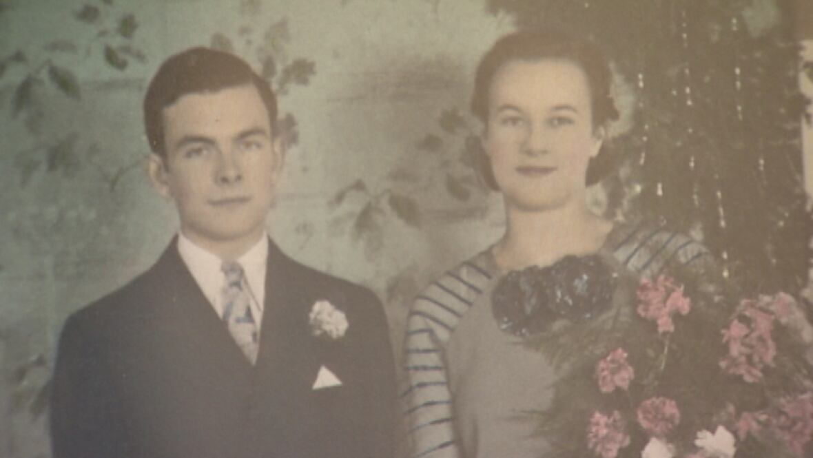

DATING MENUE
How to stay married for 78 years."
BY KELLY O'SULLIVANPUBLISHED: JAN 30, 2017
OLD AGE LOVE DOSE EXIST
 For a country where four out of 10 first marriages end in divorce, Bertie and Bill Nickerson have some professional tips.
The Liverpool, N.S., couple married on Dec. 2, 1935. They celebrated their first decade together at the end of the Second World War.
They sailed by their 40th anniversary amid the counterculture of the 1970s and hit the big five-oh in 1985.
Fast forward to 2013, and the happy couple are celebrating their 78th wedding anniversary. That makes them one of the longest-married couples in Canada.
Bill is 99 and Bertie 96. Despite the expected health problems — three heart attacks, two bad knees and two bad hips — the couple still live together in the house Bill built in 1950.
Bill Nickerson says he knew she was the one. He was a strapping 18-year-old back in 1932, and she was a beautiful 15-year-old.
"She came down these stairs. I said it's heaven. She must have come from heaven," he recalls.
Bertie says he impressed her as a "cute little fellow
They dated for three years — putting their total relationship at 81 years. Bill often walked the five kilometres between their homes during their courtship.
One week after she turned 18, they got married. They raised two boys. 'It's just that she's she
So what are their secrets?
Bill credits Bertie's patience and personality. "It's just that she's she. I love her," he says. "I wouldn't trade a minute with anyone else."
Bertie says it’s pretty simple: they get along.
"I wasn't going to live here alone," she tells him. "You've got to stay around. You remember that, boy. Don't you go and leave."
'It's just that she's she